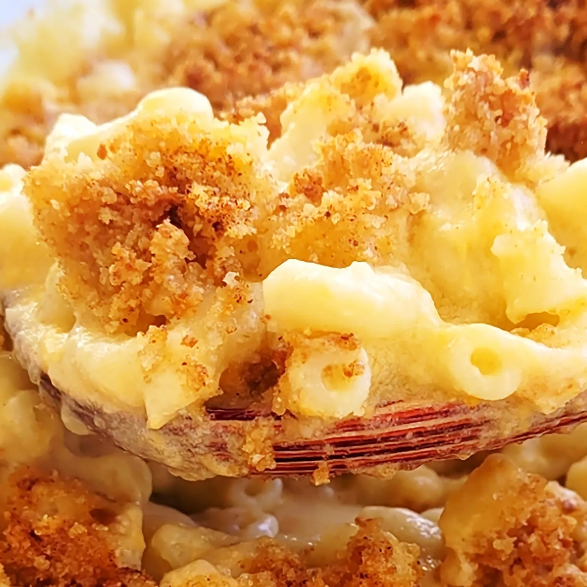

Mac and Cheese

Description
This mac and cheese recipe with a buttered bread crumb topping is creamy and comforting. It's easy to make the cheese sauce from scratch on your stovetop, starting with a roux and adding milk, Cheddar, and Parmesan, resulting in a rich, decadent sauce that coats every nook and cranny of the noodles.
Ingredients
- Macaroni: This homemade mac and cheese starts with a box of uncooked macaroni noodles.
- Butter and flour: You'll need butter and flour to make a roux for the cheese sauce. You'll also need two tablespoons of butter for the topping.
- Milk: Use whole milk for the richest flavor and texture.
- Cheese: This baked mac and cheese recipe calls for Cheddar and Parmesan cheeses.
- Seasonings: Salt and pepper goes into the sauce, while paprika is sprinkled over the topping.
- Bread crumbs: Use store-bought dried bread crumbs.
Steps to make a tasty Mac and Cheese
- Boil the noodles, drain, and transfer to a prepared baking dish.
- Make the cheese sauce, pour the sauce over the noodles, and stir.
- Make the topping, spread it over macaroni and cheese, and sprinkle with paprika.
- Bake the mac and cheese until the topping is golden brown.
back
home